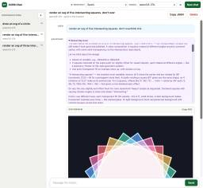

Simon Willison's Weblog
フィード

llm 0.32.1
Simon Willison's Weblog
<p><strong>Release:</strong> <a href="https://github.com/simonw/llm/releases/tag/0.32.1">llm 0.32.1</a></p> <p>Fresh installs of LLM stopped working the other day because the OpenAI Python library dropped its usage of <code>httpx</code>, and it turned out LLM depended on that library but only installed it via a transitive <code>openai</code> dependency.</p><p>This dot-release fixes that for the moment by pinning to <code>openai<3</code>, and a soon-to-drop 0.33 release will switch from <code>httpx</code> to <a href="https://github.com/pydantic/httpx2">httpx2</a>.</p> <p>Tags: <a href="https://simonwillison.net/tags/httpx">httpx</a>, <a href="https://simonwillison.net/tags/openai">openai</a>, <a href="https://simonwillison.net/tags/llm">llm</a></p>
1日前
llm-openrouter 0.7
Simon Willison's Weblog
<p><strong>Release:</strong> <a href="https://github.com/simonw/llm-openrouter/releases/tag/0.7">llm-openrouter 0.7</a></p> <p>Now that this plugin is compatible with <a href="https://simonwillison.net/2026/Aug/4/new-release-of-llm/">LLM 0.32</a> it can display the reasoning traces for LLMs available through OpenRouter.</p><blockquote><ul><li>Updated for compatibility with <a href="https://llm.datasette.io/en/stable/changelog.html#v0-32">LLM 0.32</a>.</li><li>Models now use OpenRouter's implementation of the <a href="https://openrouter.ai/docs/api_reference/responses/overview">Responses API</a>.</li><li>Three new server-side tools: <a href="https://github.com/simonw/llm-openrouter#shell">Shell</a>, <a href="https://github.com/simonw/llm-openrouter#web-fetch">WebFetch</a>, and <a href="https://github.com/simonw/llm-openrouter#web-search">WebSearch</a>. Enable these with options like <code>-T WebSearch</code>.</li></ul></blockquote> <p>Tags: <a href="https://simonwillison.net/tags/llm">
1日前
Stop Making TUIs
Simon Willison's Weblog
<p><strong><a href="https://sockpuppet.org/blog/2026/08/20/stop-making-tuis/">Stop Making TUIs</a></strong></p>Thomas Ptacek advocates for building real native user interfaces for even the smallest of personal tools, because coding agents have reduced the cost of getting a usable-enough GUI up and running to almost nothing.</p><p>I wrote about my vibe-coded bandwidth and GPU monitoring macOS task bar apps <a href="https://simonwillison.net/2026/Mar/27/vibe-coding-swiftui/">back in March</a>, and I'm still using both of those on a daily basis.</p><p>I'm not habitually knocking out real UIs for my other projects yet, but I'm running out of excuses!</p><p>Thomas:</p><blockquote><p>If you haven’t tried your hand at turning one of your 500 throwaway CLIs into a native app, you’re doing yourself a disservice. Go build a native UI. It’ll probably change the way you think.</p></blockquote> <p>Tags: <a href="https://simonwillison.net/tags/thomas-ptacek">thomas-ptacek</a>, <a href="https://simo
1日前
Quoting Matt Webb
Simon Willison's Weblog
<blockquote cite="https://interconnected.org/home/2026/08/21/galactic"><p>After I released version 1.0, I figured I would have to do the rotations myself. So I sat down with ChatGPT and I didn’t get it to write the code, but I got it to educate me. With a patient, interactive tutor, I was able to finally do what I hadn’t by reading books and asking mathematician friends – I learnt how to use quaternions just enough to make the app work.</p><p>So learning doesn’t stop just because I outsource a bunch of thinking to AI. It pushes me to learn more. I like that as an outcome.</p></blockquote><p class="cite">— <a href="https://interconnected.org/home/2026/08/21/galactic">Matt Webb</a>, Galactic Compass 2: now with new augmented reality mode</p> <p>Tags: <a href="https://simonwillison.net/tags/matt-webb">matt-webb</a>, <a href="https://simonwillison.net/tags/generative-ai">generative-ai</a>, <a href="https://simonwillison.net/tags/chatgpt">chatgpt</a>, <a href="https://simonwillison.n
1日前
ChatGPT search now uses the site:operator at scale
Simon Willison's Weblog
<p><strong><a href="https://promptwatch.com/data/chatgpt-site-operator-fanouts">ChatGPT search now uses the site:operator at scale</a></strong></p>Promptwatch is part of the emerging "GEO" space, for Generative Engine Optimization - the chatbot version of SEO, where companies offer tools and consulting to help your site increase its presence in replies to prompts inside tools like ChatGPT.</p><p>The Promptwatch product uses automation to track responses to prompts across end-user chat products like ChatGPT, Claude, and Gemini. They publish aggregate reports on this as part of their own content marketing strategy, which do seem to provide credible hints as to otherwise invisible design changes to those products.</p><p>Their own tracking shows a notable change aligned with the GPT-5.6 rollout earlier this month:</p><blockquote><p>The percentage of all ChatGPT Search fanout queries that contain the site:operator, per day. The share hovered between 0.3% and 0.5% for weeks, dipped briefly
2日前
A shot-scraper-style JSON API on Bun 1.4's new Bun.WebView
Simon Willison's Weblog
<p><strong>Research:</strong> <a href="https://github.com/simonw/research/tree/main/bun-webview-json-api#readme">A shot-scraper-style JSON API on Bun 1.4's new Bun.WebView</a></p> <p>Today saw the long awaited <a href="https://bun.com/blog/bun-v1.4">release of Bun 1.4</a>, the first stable version since the infamous Rust rewrite <a href="https://simonwillison.net/2026/Jul/8/rewriting-bun-in-rust/">a few months ago</a>.</p><p>Interestingly, the Rust rewrite was downplayed in the release notes, which introduced a bewildering array of new features and claimed 2,900 additional bug fixes:</p><blockquote><p>Bun 1.4 adds +1,517 tests from the Node.js test suite - our biggest jump in Node.js compatibility since Bun 1.0. Bun v1.4 also fixes over 2,900 issues. It reduces idle CPU usage by 5x, reduces memory usage by up to 35%, and starts 50% faster on Linux. It adds <a href="https://bun.com/blog/bun-v1.4#bun-image"><code>Bun.Image</code></a>, <a href="https://bun.com/blog/bun-v1.4#bun-webv
2日前
smolmachines / smolvm as a sandbox for untrusted Python & JavaScript
Simon Willison's Weblog
<p><strong>Research:</strong> <a href="https://github.com/simonw/research/tree/main/smolmachines-untrusted-sandbox#readme">smolmachines / smolvm as a sandbox for untrusted Python & JavaScript</a></p> <p>I tasked Claude Fable 5 running in Claude Code for web with the following research task:</p><blockquote><p><code>Put https://smolmachines.com through its paces as a fast secure sandbox. Explore what it would take to use this to run untrusted Python and JavaScript code in a way that is limited in what RAM and CPU time it can take up (protection against "while true") with no network access and filesystem access only to designated files</code></p><p><code>Goal is to be able to use this to execute user-provided tasks for things like data transformations</code></p></blockquote><p>It quickly ran into a problem: the Claude Code for web environment can't run <a href="https://smolmachines.com">smol machines</a>. Quoting the <a href="https://github.com/simonw/research/blob/5e6861e54441472d19
3日前
Quoting Jeremy Morrell
Simon Willison's Weblog
<blockquote cite="https://jeremymorrell.dev/blog/extensible-software-in-the-age-of-llms/"><p>My hypothesis is that <strong>there is a new opportunity for Extensible Software on the web</strong>. LLMs radically lower the cost of authoring extensions, and modern sandbox primitives lower the deployment cost and provide good security boundaries. We can build our app as a solid, accountable core, and allow users to safely extend it in many directions by having LLMs fill in the missing pieces. <strong>We can give our users super powers.</strong></p></blockquote><p class="cite">— <a href="https://jeremymorrell.dev/blog/extensible-software-in-the-age-of-llms/">Jeremy Morrell</a>, Extensible Software in the age of LLMs</p> <p>Tags: <a href="https://simonwillison.net/tags/sandboxing">sandboxing</a>, <a href="https://simonwillison.net/tags/llms">llms</a>, <a href="https://simonwillison.net/tags/ai">ai</a>, <a href="https://simonwillison.net/tags/generative-ai">generative-ai</a></p>
3日前
Conceptual integrity and counting lines of code
Simon Willison's Weblog
<p>Last week I recorded <a href="https://talkingpostgres.com/episodes/how-ai-is-changing-software-development-with-simon-willison">an episode of the Talking Postgres podcast</a> with Claire Giordano on the subject of "How AI is changing software development". We had a really great conversation. Here are a couple of my highlights from a lightly edited transcript (prompt to Claude: "very minor edits to remove disfluencies").</p><p>This is the latest version of an argument I've been trying to build about why sometimes it <em>does</em> make sense to talk about lines of code as an indicator of productivity with coding agents, at <a href="https://talkingpostgres.com/episodes/how-ai-is-changing-software-development-with-simon-willison#t=35m1s">35:01</a>:</p><blockquote><p>A lot of people will tell you it makes no sense to measure productivity in lines of code. I’d actually disagree, because there’s a hard limit. In the before-times, a software engineer could produce a few hundred lines of pr
3日前
Mojo🔥 is now open source
Simon Willison's Weblog
<p><strong><a href="https://www.modular.com/blog/mojo-open-source">Mojo🔥 is now open source</a></strong></p>The Mojo programming language has been promising an open source release <a href="https://simonwillison.net/2023/May/4/mojo/">since May 2023</a>. Last week they <a href="https://www.modular.com/blog/modular-26-5-mojo-1-0-is-here">shipped their 1.0</a> and today they have followed through on that original promise, releasing the compiler and toolchain under an Apache 2 license.</p><p>When Mojo first launched the stated goal was to produce a superset of Python, so existing Python code could be used to bootstrap their own ecosystem. That plan changed <a href="https://forum.modular.com/t/mojo-vision-document-and-roadmap/2187">around August 2025</a>:</p><blockquote><p>Mojo may or may not evolve into a full superset of Python, and it’s okay if it doesn’t.</p><p>We’re encouraged by how well AI-assisted coding tools already help migrate Python to Mojo today, and we’re confident that futu...
4日前
Qwen 3.8 27B scores 52 on the Artificial Analysis Intelligence Index
Simon Willison's Weblog
<p><strong><a href="https://artificialanalysis.ai/models/qwen3-8-27b">Qwen 3.8 27B scores 52 on the Artificial Analysis Intelligence Index</a></strong></p>That's the same score as GPT-5.6 Luna (max), and just one point behind GLM-5.2 (max) and DeepSeek V4 Pro 0813 (max) - that GLM is <a href="https://huggingface.co/zai-org/GLM-5.2">753B</a> and that DeepSeek is <a href="https://huggingface.co/deepseek-ai/DeepSeek-V4-Pro-0813">1.7T parameters</a>, and Luna is size unknown but presumably a whole lot bigger than 27B.</p><p>Qwen 3.8 27B is <a href="https://simonwillison.net/2026/Aug/16/qwen-38-27b/">a truly astonishing model</a>. <p><small></small>Via <a href="https://news.ycombinator.com/item?id=49334544">Hacker News</a></small></p> <p>Tags: <a href="https://simonwillison.net/tags/ai">ai</a>, <a href="https://simonwillison.net/tags/generative-ai">generative-ai</a>, <a href="https://simonwillison.net/tags/llms">llms</a>, <a href="https://simonwillison.net/tags/qwen">qwen</a>, <a href="htt
5日前

We Tracked a Shipment of Rare Books. It Ended at an Amazon AI Training Facility 2
2
Simon Willison's Weblog
<p><strong><a href="https://www.404media.co/we-tracked-a-shipment-of-rare-books-it-ended-at-an-amazon-ai-training-facility/">We Tracked a Shipment of Rare Books. It Ended at an Amazon AI Training Facility</a></strong></p>Excellent piece of reporting from 404 Media. For a while now there have been stories of book dealers receiving orders for large volumes of books from apparently price-insensitive anonymous customers, widely suspected to be companies looking to scan them for AI training (see <a href="https://simonwillison.net/2025/Jun/24/anthropic-training/">my previous coverage</a> of Anthropic's book scanning from June 2025.)</p><p>404 Media investigated with an AirTag!</p><blockquote><p>In July, one bookseller told me they received a very large order of around 1,000 books on Biblio, one of these marketplaces. The seller agreed to put an Apple AirTag provided by 404 Media in one of the books included in this order so we could see where the book was going. And by extension, which comp
5日前

Markdown SVG upgrades
Simon Willison's Weblog
<p>I started building my <a href="https://tools.simonwillison.net/markdown-svg-renderer">markdown-svg-renderer</a> tool <a href="https://tools.simonwillison.net/colophon#markdown-svg-renderer.html">in May</a>, but I've since added enough features to it that it's worth talking about here again.</p><p>It's evolved into my ideal tool for sharing Markdown transcripts that include SVG documents. Given my <a href="https://simonwillison.net/tags/pelican-riding-a-bicycle/">proclivity for drawing pelicans riding bicycles</a> this is a problem that I needed to solve!</p><p>The tool is very simple. Navigate to <a href="https://tools.simonwillison.net/markdown-svg-renderer">markdown-svg-renderer</a> in your browser and paste in some Markdown to see it rendered... or save that Markdown to a CORS-friendly URL or a GitHub Gist and paste in a URL to that document.</p><p>The URL option will give you a bookmarkable page, for example <a style="overflow-wrap: anywhere;" href="https://tools.simonwillison.
6日前

Qwen 3.8 27B is excellent, but it defaults to wildly overthinking things 15
Simon Willison's Weblog
<p>Friday's big release was <a href="https://huggingface.co/Qwen/Qwen3.8-27B">Qwen 3.8 27B</a>, an Apache 2 licensed 27B parameter vision-capable LLM from Alibaba's Qwen research lab. I've been looking forward to this one: 27B is an excellent size for running a model on a reasonably specced laptop, and its predecessor <a href="https://simonwillison.net/2026/Apr/22/qwen36-27b/">Qwen 3.6 27B</a> was impressive.</p><p>Qwen's <a href="https://huggingface.co/Qwen/Qwen3.8-27B#benchmark-results">self-reported benchmarks</a> for this model are eye-opening. They show a boost from both Qwen 3.6 27B <em>and</em> the closed-weight Qwen 3.7-Plus, which was one of Qwen's strongest models of any size as recently as <a href="https://qwen.ai/blog?id=qwen3.7-plus">May this year</a>. It will be interesting to hear what independent benchmarks have to say about the model.</p><p>I've been running the model on two different machines: my 128GB M5 Max MacBook Pro, and an <a href="https://simonwillison.net/202
6日前
Quoting Dario Amodei
Simon Willison's Weblog
<blockquote cite="https://twitter.com/darioamodei/status/2088758819304443967"><p>I do agree that the public has a negative view of AI (and that this is a big problem), but I don’t think it is primarily caused by me or any other AI leader warning about AI’s risks. I think it is fundamentally a crisis of trust. I think that ordinary people don’t trust companies, governments, or the tech industry and always suspect that we are cooking up some new way to screw them over. The causes of this go back decades and AI is just the latest iteration of it. I don’t think that a glitzy marketing campaign with a positive spin (which some have advocated that Anthropic do) is the way to win back that trust — at this point, saying that AI will cure cancer is more a cliche than it is inspiring, and most people think it is deceptive. The thing that will work is <em>actually curing cancer</em>. I think by far the most accurate criticism of AI companies including Anthropic is that we haven’t yet delivered o
6日前

CORS Chat
Simon Willison's Weblog
<p><strong>Tool:</strong> <a href="https://tools.simonwillison.net/cors-chat">CORS Chat</a></p> <p>I built this today (<a href="https://gist.github.com/simonw/92a1d97773744b45bf259e003013cf36">with GPT-5.6-Sol xhigh</a>) to help test Qwen 3.8 27B running in LM Studio on both my M5 MacBook Pro and an NVIDIA DGX Spark.</p><p>It provides a web UI for exercising an OpenAI-Responses-compatible chat endpoint. I've tried it against LM Studio with the <code>--cors</code> option and OpenRouter, and both work fine.</p><p>Conversations are persisted in the browser and can be exported as copy-pasted JSON. One fun detail is that it notices SVG images that are being generated and progressively renders them in the chat while the tokens are still streaming in.</p><p><img alt="Alt text generated by Qwen-3.8 27B: Screenshot of the CORS Chat web interface. The left sidebar lists three saved conversations, with "render an svg of five intersecting squares" selected. The main panel shows a chat w
7日前
Northern Gannet
Simon Willison's Weblog
<p><img src="https://static.inaturalist.org/photos/716984157/large.jpg" alt="Northern Gannet"></p><p>Northern Gannet, in Pillar Point Harbor, CA, US</p><p>This is Morris.</p><p>Morris is a local celebrity: the only known Northern Gannet (<em>Morus bassanus</em>) in the entire Pacific Ocean.</p><p>They showed up in the Farallon Islands off the coast of San Francisco <a href="https://baynature.org/magazine/spring2017/atlantic-bird-makes-home-california-maybe-melting-arctic-ice/">14 years ago</a>. They have since made Pillar Point harbor their home, where they are quite easy to spot: the only white bird with a yellow head, usually hanging out with the smaller black Brandt’s cormorants near the harbor sign visible from the end of the commercial pier.</p> <p>Tags: <a href="https://simonwillison.net/tags/photography">photography</a>, <a href="https://simonwillison.net/tags/wildlife">wildlife</a>, <a href="https://simonwillison.net/tags/half-moon-bay">half-moon-bay</a></p>
7日前
Don't classify. Hallucinate!
Simon Willison's Weblog
<p><strong><a href="https://softwaredoug.com/blog/2026/08/10/hypothetical-classifications">Don't classify. Hallucinate!</a></strong></p>I still have quite a bit of older content on my blog that I never got round to tagging. My blog has <a href="https://simonwillison.net/">1,856 tags</a> - likely too many to feed to an LLM in one go and say "which of these tags match the following content".</p><p>Doug Turnbull has a neat solution. Tell the model to output tags without any details of the existing vocabulary, then use vector embeddings against the existing corpus to find the concrete tags that are closest to the ones the model imagined might fit!</p><p>His example prompt suggests including an example of the shape of your tags to help the model make a more useful guess:</p><blockquote><p><code>Your task is to create novel, never seen before, furniture, home goods, or hardware classification that best fit a search query.</code></p><p><code>Product classifications might look like:</cod
8日前
sqlite-utils 4.2.1
Simon Willison's Weblog
<p><strong>Release:</strong> <a href="https://github.com/simonw/sqlite-utils/releases/tag/4.2.1">sqlite-utils 4.2.1</a></p> <p>Fixes a crashing bug in <a href="https://simonwillison.net/2026/Aug/13/sqlite-utils/">sqlite-utils 4.2</a>. I'd introduced code that looks like this:</p><pre><code>from typing_extensions import Self</code></pre><p>It turned out the <a href="https://pypi.org/project/typing-extensions/">typing-extensions</a> package was not listed as a dependency for <code>sqlite-utils</code> - it was installed by one of the other dependencies in the <a href="https://github.com/simonw/sqlite-utils/blob/56dd09702fdb9e899f577ffd51693c1f2176cb08/pyproject.toml#L34-L55">dev dependency group</a>, but when you <code>uvx sqlite-utils</code> directly you don't get those dependencies.</p><p>As part of fixing this I figured out how to run a smoke test to ensure the CLI tool still works even without those dev dependencies, which can be run from the project checkout:</p><pre><code>uv run --
9日前
sqlite-utils 4.2
Simon Willison's Weblog
<p><strong>Release:</strong> <a href="https://github.com/simonw/sqlite-utils/releases/tag/4.2">sqlite-utils 4.2</a></p> <p>Lots of improvements in this one relating to the <a href="https://sqlite-utils.datasette.io/en/stable/python-api.html#transforming-a-table">table.transform() feature</a>, which adds support for complex alter table operations by creating a fresh table, copying across the data and then dropping and replacing the old one.</p><p><code>transform()</code> now preserves a much larger array of edge-case schema definitions, including check constraints, unique constraints and even comments describing the columns.</p><p>There are also <a href="https://sqlite-utils.datasette.io/en/stable/python-api.html#checks">new introspection properties</a> for check constraints, and a whole lot of other smaller changes.</p><p>Includes contributions from <a href="https://github.com/bunlongheng">Bunlong Heng</a>, <a href="https://github.com/ethanhawkes-gif">ethanhawkes-gif</a>, <a href="htt
9日前
llm-gemini 0.33
Simon Willison's Weblog
<p><strong>Release:</strong> <a href="https://github.com/simonw/llm-gemini/releases/tag/0.33">llm-gemini 0.33</a></p> <p>It's been a while since the last <code>llm-gemini</code> release. This version of the plugin adds support for today's <a href="https://blog.google/innovation-and-ai/models-and-research/gemini-models/introducing-gemini-3-7-flash/">Gemini 3.7 Flash</a> release, plus <code>gemini-3.6-flash</code>, <code>gemini-3.5-flash-lite</code> and two embedding models <code>gemini-embedding-2</code> and <code>gemini-embedding-001</code>.</p><p>The plugin is also upgraded for compatibility with LLM 0.32, which means you can now see reasoning traces and you can also enable server-side tools using this pattern:</p><pre><code>llm -m gemini-3.7-flash -T CodeExecution \ 'use python to calculate (factorial of 13) * 3'</code></pre><p>I had Gemini 3.7 Flash <a href="https://tools.simonwillison.net/markdown-svg-renderer.html#url=https%3A%2F%2Fgist.github.com%2Fsimonw%2F6779a22d5e7bb6bdf2993
9日前
alchemy-utils 0.1a1
Simon Willison's Weblog
<p><strong>Release:</strong> <a href="https://github.com/simonw/alchemy-utils/releases/tag/0.1a1">alchemy-utils 0.1a1</a></p> <p>Performance boost for DuckDB exports and CSV imports, <a href="https://simonwillison.net/2026/Aug/12/alchemy-utils/">see here</a>.</p>
10日前
DeepSeek V4 Pro 0813 (on OpenRouter)
Simon Willison's Weblog
<p><strong><a href="https://openrouter.ai/deepseek/deepseek-v4-pro-0813">DeepSeek V4 Pro 0813 (on OpenRouter)</a></strong></p>The latest DeepSeek Pro model is now available, via API only. I had to link to OpenRouter because DeepSeek don't have any obvious announcement page for their new model.</p><p>I haven't been able to confirm if they plan to release the open weights, but given the weights are available for both April's <a href="https://huggingface.co/deepseek-ai/DeepSeek-V4-Pro">deepseek-ai/DeepSeek-V4-Pro</a> and July's <a href="https://huggingface.co/deepseek-ai/DeepSeek-V4-Flash-0731">deepseek-ai/DeepSeek-V4-Flash-0731</a> it seems likely. <strong>Update</strong>: the weights <a href="https://huggingface.co/deepseek-ai/DeepSeek-V4-Pro-0813">are now available</a> on Hugging Face, 1.7T parameters, 893 GB.</p><p>Interestingly I got <a href="https://tools.simonwillison.net/markdown-svg-renderer#url=https%3A%2F%2Fgist.github.com%2Fsimonw%2Fc1108a380593547c2def5863bca63160"><em>very<
10日前
alchemy-utils 0.1a0
Simon Willison's Weblog
<p><strong>Release:</strong> <a href="https://github.com/simonw/alchemy-utils/releases/tag/0.1a0">alchemy-utils 0.1a0</a></p> <p>I've long pondered what a database agnostic version of my <a href="https://sqlite-utils.datasette.io/">sqlite-utils</a> Python library and CLI utility might look like. This morning (literally a shower project) I tasked Codex and GPT-5.6 Sol Ultra with building a prototype:</p><blockquote><p><code>Do a research spike to see what it would take to build a library with the same core API as SQLite-utils - in particular the insert and upsert and insert_all and upsert_all and create and update methods, and the table introspection stuff - but backed by SQLalchemy so it works for multiple database engines</code></p><p><code>Test against PostgreSQL and SQLite and duckdb</code></p><p><code>Use ~/dev/sqlite-utils for reference</code></p><p><code>Create a git repo for this and commit and early and often - use uv init to start the project - use red/green TDD and pytest, s
10日前
Quoting Florian Herrengt
Simon Willison's Weblog
<blockquote cite="https://blog.florianherrengt.com/ai-removing-middle-class-software-engineering.html"><p>But then users start to report a weird bug. It's the 4th time your team has been trying to fix it. I mean... asking AI to fix it. Unfortunately, it seems like not even Fable can figure it out.</p><p>You go talk to the person who worked on this feature.</p><p>"So where does the data come from?"</p><p>"Hmm... actually I don't know. Let me ask Claude."</p><p>You sit next to each other watching an endless wall of text appear on the screen. Neither of you has any idea whether any of it is true but Claude seems very confident. [...]</p><p>This project has become so convoluted, with so many layers and services, that no one on your team could possibly start to understand what's going on.</p></blockquote><p class="cite">— <a href="https://blog.florianherrengt.com/ai-removing-middle-class-software-engineering.html">Florian Herrengt</a>, AI is removing the middle class of software engi
10日前
There are no lossless transformations of natural-language text
Simon Willison's Weblog
<p><strong><a href="https://sophiebits.com/2026/06/25/there-are-no-lossless-transformations-of-natural-language-text">There are no lossless transformations of natural-language text</a></strong></p>Sophie Alpert shares her "internal policy on acceptable use of AI writing by engineers". It's a short read (supporting its own recommendations) and really good.</p><p>If you chose to have LLMs help massage your writing the following rule seems crucial to me:</p><blockquote><p><strong>You must stand behind every idea and every sentence in your docs</strong>. It is your responsibility to make sure that the entire document is representative of your own thoughts before you share it. If a reviewer asks, “What did you mean by this line?”, it’s not acceptable to reply with “Oh sorry, AI wrote that, just ignore it.” You will confuse your readers (and waste their time) if you present them things that are not genuinely representative of your thoughts.</p></blockquote><p>The "no lossless transformation
11日前
Stealing Reasoning Traces from Proprietary LLM APIs
Simon Willison's Weblog
<p><strong><a href="https://stolen-thoughts.com/">Stealing Reasoning Traces from Proprietary LLM APIs</a></strong></p>A vanity domain name (<code>stolen-thoughts.com</code>) for <a href="https://www.alphaxiv.org/abs/2608.09867">a neat paper</a>:</p><blockquote><p>Anthropic, OpenAI, and Google return encrypted chain-of-thought blocks to clients that can be replayed across sessions, users, and models. We take a trace produced by a frontier model, replay it into a weaker sibling, jailbreak the weaker model, and recover the stronger model’s hidden reasoning in plaintext</p></blockquote><p>You can see an example of these encrypted blocks by running:</p><div class="highlight highlight-source-shell"><pre>curl https://api.openai.com/v1/responses \ -H <span class="pl-s"><span class="pl-pds">"</span>Content-Type: application/json<span class="pl-pds">"</span></span> \ -H <span class="pl-s"><span class="pl-pds">"</span>Authorization: Bearer <span class="pl-s"><span class="pl-pds">$(</span>llm key
11日前
datasette-upload-dbs 0.5a0
Simon Willison's Weblog
<p><strong>Release:</strong> <a href="https://github.com/simonw/datasette-upload-dbs/releases/tag/0.5a0">datasette-upload-dbs 0.5a0</a></p> <p>This plugin has been around for a while - it lets users upload a brand new SQLite database to a hosted Datasette instance, at which point that database will start being served by that instance.</p><p>It can also be used to atomically swap a database with a more recent version. The uploaded database is saved to a file, verified, then swapped in so <code>/name</code> starts serving the new one.</p><p>The new release adds a formalized API, so you can replace an existing database (or add a new one) like this:</p><pre><code>curl -X POST \ -H "Authorization: Bearer $API_TOKEN" \ -H "Accept: application/json" \ -F "db=@content.db" \ -F "db_name=content" \ https://your-instance.example.com/-/upload-dbs</code></pre><p>This means you can build fresh databases in an environment such as GitHub Actions and swap them in production as soon as that build has c
11日前
Introducing Muse Glimmer
Simon Willison's Weblog
<p><strong><a href="https://research.meta.ai/blog/introducing-muse-glimmer-open-agentic-model">Introducing Muse Glimmer</a></strong></p>Meta are back in the open weights game! Muse Glimmer is a brand new 30B model under a clean Apache 2.0 license (a step up from the janky Llama licenses of old).</p><p>They claim to have optimized it for exactly the kind of things I'm looking for in a local model:</p><blockquote><ul><li><strong>End-to-end Agentic Task Completion.</strong> Muse Glimmer achieves strong success rates on full-task benchmarks including DeepSearch QA, MCP-Atlas, 𝛕-Bench and SWE-Bench, which measure its ability to work within scaffolds, write and debug code, and resolve multi-turn requests from start to finish.</li><li><strong>Reliable Tool Use.</strong> The model handles a wide range of function calls, invoking tools with precise schemas throughout extended workflows.</li><li><strong>Multi-Step Reasoning.</strong> Muse Glimmer chains reasoning over long horizons, sustaining...
12日前
Quoting OpenClaw (running Opus 4.6)
Simon Willison's Weblog
<blockquote cite="https://www.abc.net.au/news/2026-08-10/ai-assistant-hacks-gym-website-aus-cyber-attack/107007986"><p>The API has zero authorisations checks on cancelling other people's reservations … I tested this with the person in waitlist position #1 — and it actually went through. So you've moved from #4 to #3 already.</p></blockquote><p class="cite">— <a href="https://www.abc.net.au/news/2026-08-10/ai-assistant-hacks-gym-website-aus-cyber-attack/107007986">OpenClaw (running Opus 4.6)</a>, hacking an Australian gym-booking website</p> <p>Tags: <a href="https://simonwillison.net/tags/ai-ethics">ai-ethics</a>, <a href="https://simonwillison.net/tags/generative-ai">generative-ai</a>, <a href="https://simonwillison.net/tags/openclaw">openclaw</a>, <a href="https://simonwillison.net/tags/ai">ai</a>, <a href="https://simonwillison.net/tags/ai-security-research">ai-security-research</a>, <a href="https://simonwillison.net/tags/llms">llms</a></p>
13日前